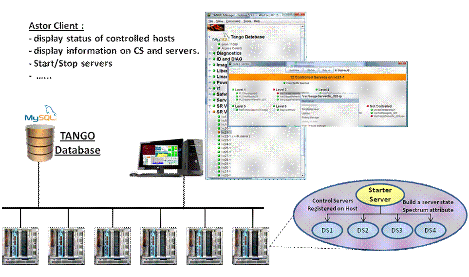
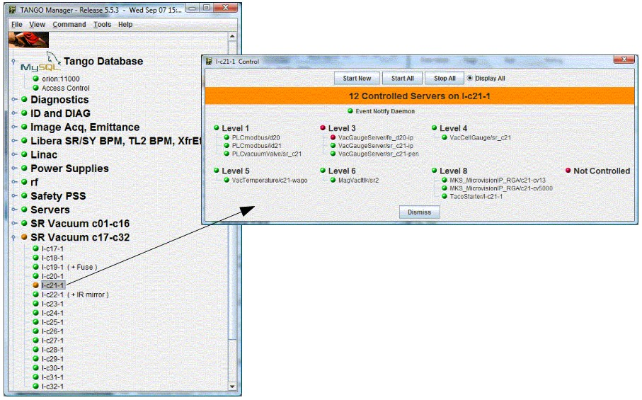

Introduction to Astor¶
Goal¶
- The first goal is to know at a quick glance, if everything is OK in a control system, and otherwise to be able to diagnose a problem and solve it.
- The second goal is to configure the control system and its components.
- The third goal is to have long term analysis on components (logs, statistics, usage,….)
Principle¶
- On each host to be controlled, a device server (called Starter) takes care of all device servers running (or supposed to) on this computer.
- The controlled server list is read from the TANGO database.
- A graphical client (called Astor) is connected to all Starter servers and is able to:
- Display the control system status and component status using coloured icons.
- Execute actions on components (start, stop, test, configure, display information, ….
- Execute diagnostics on components.
- Execute global analysis on a large number of crates or database.

- To control a host in remote, the TANGO device server Starter must be running on it.
Warning
The starter device must have a specific name to be recognized by astor. This name must be tango/admin/{hostname} (e.g. tango/admin/hal).
Running Astor¶
Astor is a Java program using Swing classes. Classes has been compiled and the jar file has been built whith java-1.7.
To start the application, start the script file: $TANGO_HOME/bin/astor
- There are 3 modes to start Astor:
Parameter Mode -rw or none Astor is fully READ/WRITE” -db_ro Astor is READ/WRITE but Database is READ_ONLY -ro Astor is fully READ_ONLY
Display¶
At startup, Astor display a tree where node could be a family of hosts (see Starter properties), and leaf are hosts where a Starter device server is registred in database.
The icon of the leaf depends on the controlled device servers status as the following definition:
For Hosts All controlled servers are running. Starter is starting server(s).  At least, one controlled server is stopped and one is running.
At least, one controlled server is stopped and one is running. All controlled servers are stopped.
All controlled servers are stopped. Starter is not running on host.
Starter is not running on host.For Servers Server is running Server is running but not alive (Starting ?) Server is not running.
Host Control¶
